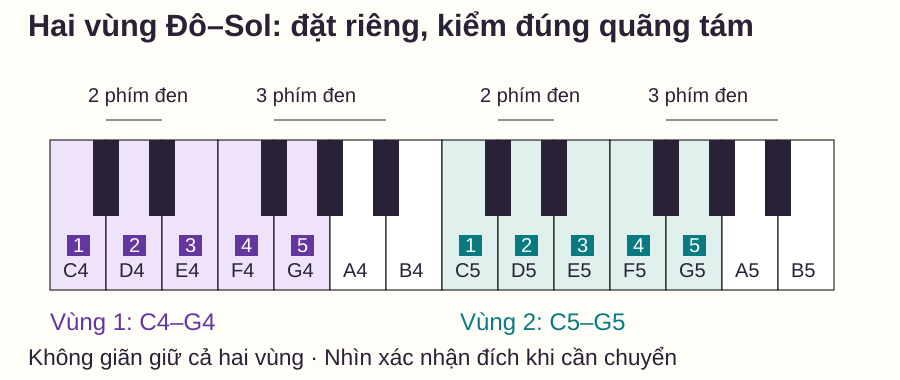
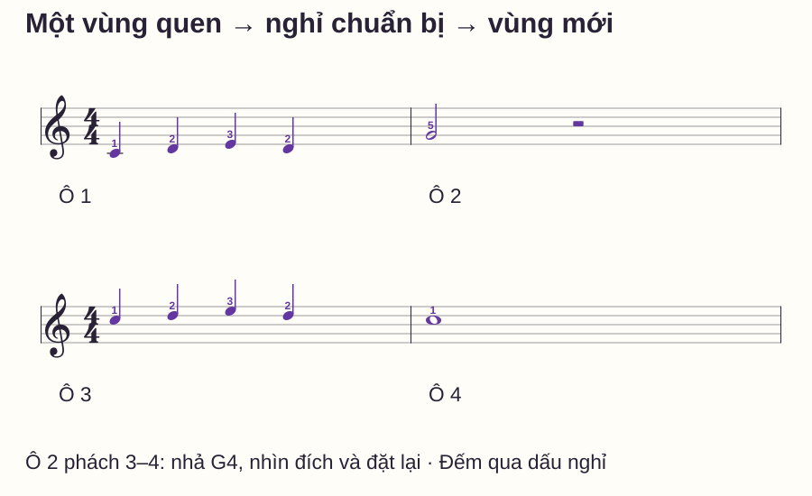

Thị tấu
Chơi piano ít nhìn tay: cách tìm phím bằng nhóm phím đen
# Chơi piano ít nhìn tay: cách tìm phím bằng nhóm phím đen
Bạn nhìn sheet để đọc nốt, cúi xuống tìm phím, ngẩng lên rồi mất chỗ trên bản. Nếu mọi tiếng đều cần một lần nhìn bàn phím, việc theo dõi câu nhạc sẽ bị ngắt nhiều lần. Nhưng cố tuyệt đối không nhìn tay cũng có thể khiến bạn đoán phím và lặp lỗi.
Mục tiêu của bài là giảm những lần nhìn chưa cần thiết trong một vùng hẹp đã chuẩn bị, đồng thời biết lúc nào nên nhìn để chuyển vị trí. Bài có một mẫu ở hai vùng Đô cách nhau một quãng tám, với khoảng nghỉ rõ để chuẩn bị bước chuyển. Bạn không cần nhắm mắt hoặc chơi bước nhảy lớn bằng cách dò mù.
Trả lời nhanh
Muốn chơi piano ít nhìn tay, hãy có điểm tựa trên bàn phím trước khi đàn: nhận nhóm hai hoặc ba phím đen, tìm đúng vùng và đặt tay vào các phím đã xác định. Với một câu ngắn trong vùng năm phím, thử nhìn sheet nhiều hơn trong khi vẫn kiểm đúng tên nốt, ngón và hướng đi. Khi chuyển sang vùng mới, nhìn xác nhận đích nếu cần rồi trở lại bản nhạc ở điểm đã đánh dấu. Đừng đánh đổi nốt đúng hoặc phách đều để đạt mục tiêu không nhìn. Bài tập nên có phép kiểm sau đặt lại, để biết bạn định vị được vùng chứ không chỉ nhớ một lần đặt tay.
Vì sao nhóm phím đen là điểm tựa tốt?
Trên bàn phím, các phím đen thường lặp thành nhóm hai và nhóm ba. Quanh nhóm hai là C–D–E; quanh nhóm ba là F–G–A–B. Baylor Piano Basics — Orientation to the Keyboard dùng quan hệ này để định hướng phím trắng với khuông nhạc.
Đây không phải mẹo thay tên nốt bằng một hình tay cố định. Nhóm hai có ở nhiều vùng; tìm đúng nhóm nhưng sai quãng tám vẫn là sai phím trong bản. Bạn cần nối hình bàn phím với cao độ cụ thể và điểm xuất phát của câu.
Bản đồ hai vùng Đô–Sol
C = Đô, D Rê, E Mi, F Fa, G Sol, A La, B Si. C4 là Đô giữa; C5 cao hơn một quãng tám. Tìm C ở phím trắng ngay bên trái nhóm hai phím đen. C4–G4 và C5–G5 đều là năm phím trắng liên tiếp, nhưng là hai vùng âm khác nhau.

Ngón 1 cái, 2 trỏ, 3 giữa, 4 áp út, 5 út. Trong mẫu cụ thể này, đặt phải C–D–E–F–G bằng 1–2–3–4–5. Khi sang vùng C5–G5, nhả và đặt lại cả tay; không giữ C4 để với tới C5. Ngón cho tên nốt có thể khác ở câu nhạc khác.
Từng bước: định vị, kiểm rồi chơi
1. Xác định vùng xuất phát khi chưa có nhịp
Nhìn và tìm C4, nói “Đô giữa”, rồi chỉ nhóm hai phím đen bên phải nó. Có thể chạm nhẹ vào nhóm phím đen để làm rõ vị trí trước khi đặt vào phím trắng, không cần tạo tiếng. Kiểm lại bằng mắt; giai đoạn này đang học bản đồ, chưa phải lượt thử giảm nhìn.
2. Chọn một đoạn không cần dịch tay
Đặt tay trong C4–G4. Chưa đàn, gọi C4–D4–E4–D4, nhận hướng liền lên, liền lên, liền xuống. Chơi một lượt với quyền nhìn khi cần, sau đó thử một lượt tập trung vào sheet. Nếu bấm sai, dừng đặt lại và xác định lỗi; không tiếp tục đoán để giữ mắt trên giấy.
3. Giảm một lần nhìn có chủ đích
Chọn riêng nốt thứ hai hoặc thứ ba đã biết nằm kề phím trước. Đọc trên sheet, chuyển ngón trong vùng đã đặt rồi nghe/kiểm. Không cố bỏ mọi lần nhìn của cả câu ngay. Mục tiêu quan sát được là một bước chuyển đúng mà bạn không cần tìm lại từ đầu, không phải đếm thành tích bao lâu không nhìn tay.
4. Chuẩn bị vùng mới và chỗ trở lại sheet
Trước khi chuyển lên C5, chỉ nốt đầu của ô 3 trên sheet để biết nơi mắt cần trở lại. Nhả tay đúng thời điểm nghỉ, nhìn đích C5 nếu cần, đặt tay và chuẩn bị nốt tiếp. Một cái nhìn có mục đích ở bước chuyển khác với nhìn xuống sau từng tiếng trong vùng đã biết.
Bài tập bốn ô có khoảng chuyển vị trí

| Ô | Nốt và trường độ | Ngón phải | Nhiệm vụ |
|---|---|---|---|
| 1 | C4–D4–E4–D4, bốn nốt đen | 1–2–3–2 | Đọc trong vùng hẹp đã đặt |
| 2 | G4 trắng ở 1–2, nghỉ trắng ở 3–4 | 5, rồi nhả | Chuẩn bị chuyển tới C5 |
| 3 | C5–D5–E5–D5, bốn nốt đen | 1–2–3–2 | Cùng hình, kiểm đúng quãng tám |
| 4 | C5 tròn, giữ bốn phách | 1 | Kết câu và kiểm vùng |
Trong 4/4, nốt đen dài một phách, trắng hai, tròn bốn. Nghỉ trắng không chơi hoặc giữ tiếng cũ. Không pedal: tại phách 3 ô 2 nhả G4, đếm tiếp 3–4 trong lúc chuẩn bị vùng mới. Cuối ô 4 giữ C5 qua 4, nhả ở số 1 của ô tiếp nếu kết thúc lượt.
Thử khoảng 50 phách/phút, một click mỗi phách, hoặc chậm hơn nếu hai phách nghỉ chưa đủ để chuẩn bị. Đếm một ô trước khi vào. Nếu vẫn chưa kịp, học riêng bước đặt C5 trước khi nối; không kéo dài dấu nghỉ trong lượt kiểm mà vẫn gọi là đúng thời gian.
Tập ô 1 riêng hai lượt có đặt lại. Sau đó tìm C5 và tập ô 3 riêng hai lượt. Cuối cùng thử đủ bốn ô một lượt. Không cần nối liên tục nhiều lần để bắt tay tự làm theo quán tính.
Tự kiểm sau khi nhấc và đặt lại tay
Nhả tay khỏi đàn, nghỉ ngắn rồi xác định lại C5 bằng nhóm phím đen và vùng âm. Bắt trực tiếp ô 3 sau một ô đếm chuẩn bị; bạn có thể nhìn để đặt vùng, rồi tập trung vào sheet trong bốn nốt.
Thử một thứ tự chữ khác trong vùng đó: D5–E5–C5–D5, bốn nốt đen, ngón 2–3–1–2. Gọi tên trước khi đàn. Phép này kiểm việc tìm phím trong vùng với thứ tự mới; vì đáp án chữ đã cho, chưa phải bài thị tấu chưa biết nốt.
Bạn cũng có thể quay về C4–G4 và thử D4–E4–C4–D4. Nếu hình tay đúng nhưng chơi nhầm vùng, hãy gọi cả tên và quãng tám trước khi vào. Đừng chỉ chấm ngón đúng rồi bỏ qua cao độ thực.
Bảng lỗi: nên nhìn gì và sửa gì?
| Biểu hiện | Điều cần kiểm | Thử sửa |
|---|---|---|
| Chơi C4 khi sheet là C5 | Đúng nhóm hai nhưng sai vùng | Tìm Đô giữa, chỉ Đô kế về bên phải rồi đặt lại |
| Trong vùng hẹp vẫn tìm lại sau mỗi tiếng | Chưa rõ nốt/ngón tiếp hoặc vị trí đặt | Gọi bốn nốt, tập từng cặp không dịch tay rồi nối |
| Nhìn xuống xong mất chỗ trên sheet | Chưa chọn điểm trở lại | Chỉ trước nốt đầu ô 3, nhìn đích rồi trở lại đúng điểm |
| Sang ô 3 chậm một phách | Chuẩn bị đích chưa xong trong nghỉ | Học riêng C5, giảm tempo hoặc tách lượt chuyển khỏi lượt câu |
| Cố không nhìn nên sai liên tiếp | Mục tiêu nhìn đang lấn mục tiêu đọc/chơi đúng | Cho phép nhìn xác nhận, thu đoạn còn hai nốt rồi thử lại |
Routine mười phút và khi nào mở rộng
- 0–2 phút: nhận C4/C5 và các nhóm hai, ba phím đen liên quan.
- 2–4 phút: đọc ô 1, chọn giảm một lần nhìn trong vùng đã đặt.
- 4–6 phút: đặt C5, tập riêng ô 3 rồi thử thứ tự D–E–C–D.
- 6–8 phút: tập chuyển trong nghỉ ô 2 rồi thử bốn ô một lượt.
- 8–10 phút: nhấc tay, đặt lại và bắt từ ô 3; ghi loại lỗi nếu có.
Mở rộng khi bạn đặt đúng vùng sau nghỉ, chơi được thứ tự mới không nhầm phím và đi qua đoạn chuyển đúng độ dài nghỉ. Việc nhìn lúc đặt vùng hoặc ở bước nhảy không làm phép thử thất bại. Chưa tăng quãng nhảy hoặc bỏ thêm nhìn khi nốt/phách còn chưa chắc.
Đọc thêm
Nhận biết phím đàn giúp ôn tên phím từ nhóm đen. Nốt mốc nối cao độ trên khuông với vùng đàn. Bước liền và bước nhảy giúp đọc quan hệ trong câu trước khi chuyển tay.
Câu hỏi thường gặp
Có phải người chơi giỏi không bao giờ nhìn bàn phím?
Không dùng quy tắc tuyệt đối đó làm mục tiêu của bài. Việc nhìn cần phục vụ nhiệm vụ cụ thể; mẫu này cho phép xác nhận đích ở bước chuyển và tập giảm nhìn trong vùng đã biết.
Có nên nhắm mắt để luyện không?
Bài không yêu cầu nhắm mắt. Bạn có thể nhìn sheet và cho phép nhìn tay khi cần kiểm; không tăng khó bằng cách bỏ cả hai nguồn thông tin lúc chưa chắc phím.
Phím đen có giúp tìm đúng quãng tám không?
Chúng cho mốc cục bộ, nhưng nhóm lặp ở nhiều vùng. Cần biết vị trí tương đối với Đô giữa hoặc vùng đã xác định trước, rồi kiểm cao độ của bản.
Có nên dán tên nốt để dễ tìm không?
Có thể dùng như hỗ trợ tạm theo nhu cầu học. Hãy có lượt kiểm bằng nhóm phím đen và vùng đàn, để biết bạn nhận vị trí hay chỉ đọc nhãn dán.
Tôi có nên tập cả hai tay ngay không?
Mẫu này dùng tay phải để giảm nhiệm vụ định vị. Chỉ thêm trái khi mục tiêu mới rõ; nếu thêm, cần ghi cụ thể nốt, ngón và thời gian của trái thay vì tự lấp phần còn thiếu.
Có cần chơi nhanh trước khi giảm nhìn không?
Không. Bắt đầu ở tempo đủ để nhận và kiểm đúng từng bước. Tốc độ cao hơn không thay việc biết mình đang ở vùng nào và cần tới phím nào.
Nguồn và ghi chú biên soạn
- Baylor Piano Basics — Orientation to the Keyboard, Michael Clark: quan hệ nhóm đen, phím trắng và các vùng Đô.
- Piano Adventures — Two Black Ants, Teacher Guide: tham khảo nhiệm vụ nhận nhóm hai phím đen và đọc mẫu; không sử dụng bài nhạc của giáo trình. Kiểm nguồn ngày 27/10/2026.
- Hình, mẫu chuyển vùng, routine và tiêu chí là thiết kế riêng; chưa có thử nghiệm học viên hoặc review giáo viên độc lập, không hứa một thời hạn chơi không nhìn tay.